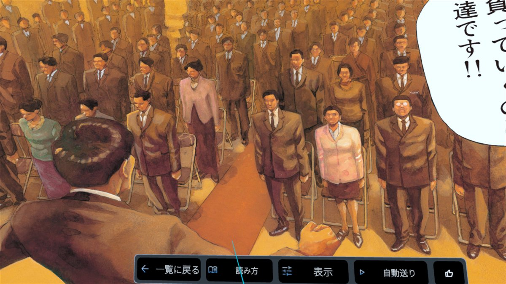
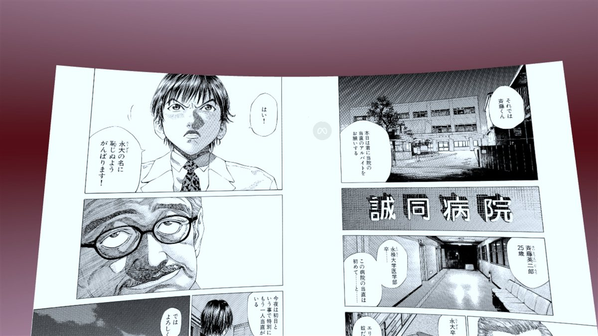
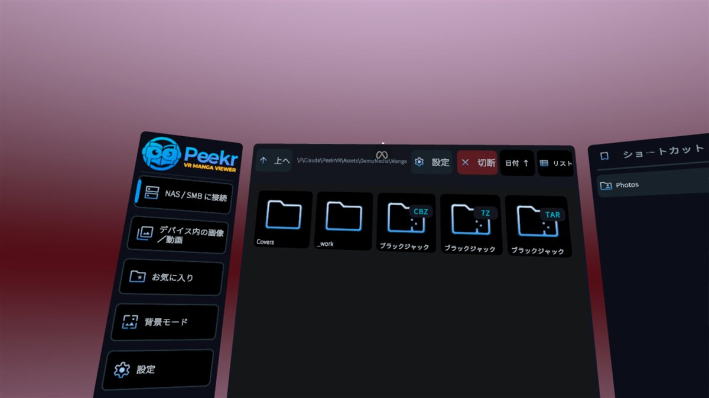
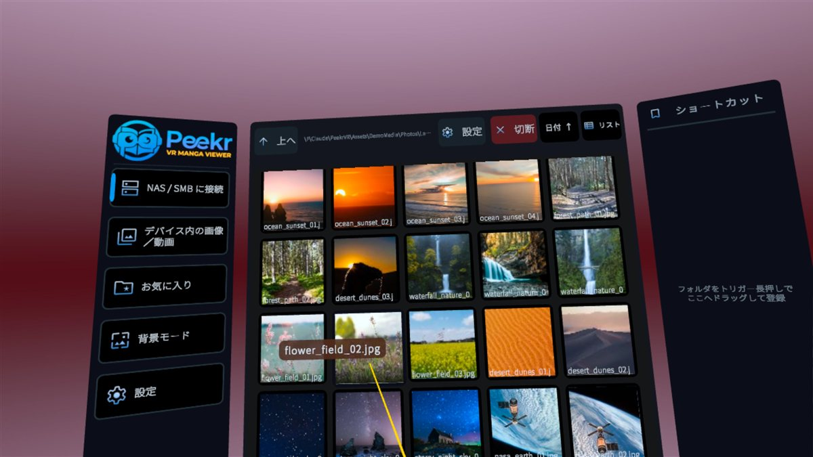
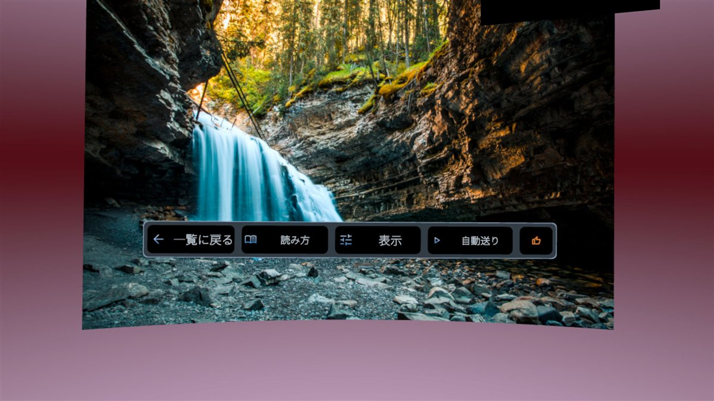
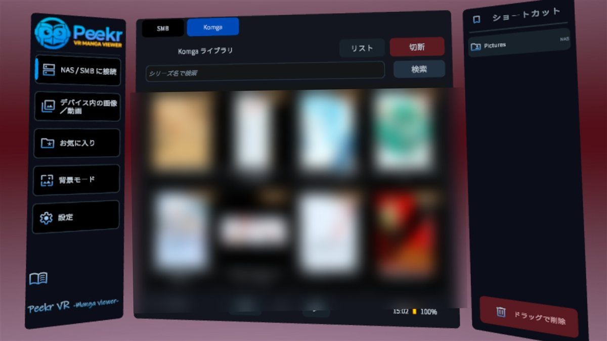

ZIPも RARも 7zも、
開かないで開く。
ZIP, RAR, 7z —
open them without opening them.
NASに置いたまま、どこまでも寄れる。
Meta Quest 3 向け 画像・動画・漫画ビューワー
Leave your library on the NAS — and zoom in as far as you like.
A comic, photo & video viewer for Meta Quest 3
¥1,980（買い切り・追加課金なし）
$14.99 — one-time purchase, no subscriptions
対応機種などの詳細はストアページをご確認ください
See the store page for device compatibility details
ZIP / CBZ / RAR / CBR / 7z / TAR を解凍せずに直接オープン。変換もコピーも不要です。
Opens ZIP / CBZ / RAR / CBR / 7z / TAR directly — no extraction, no conversion, no copying.
蔵書はNASに置いたまま。Questへの転送は要りません。ネットワーク越しにそのまま読めます。
Your library stays on the NAS. Nothing to transfer to the headset — read over the network.
シリーズ検索（日本語入力対応）・お気に入り・読書進捗の同期・読み方向（右開き/左開き）の自動反映。
Series search, favorites, reading-progress sync, and automatic reading direction (RTL/LTR) per series.
作家の筆づかい、線の入り抜き。心ゆくまで寄って読めます。大画面も原寸も自由自在。
Get as close as you want — every line, every stroke. From wall-sized to life-sized, your call.
漫画は見開きで。写真にも見開き表示を拡張。読み方向は作品ごとに切り替えできます。
Comics the way they were drawn. Spread view works for photos too, with per-title reading direction.
データ収集ゼロ。解析SDKなし。アカウント不要。あなたが何を読むかは、あなただけのものです。
Zero data collection. No analytics SDKs. No account. What you read is nobody's business but yours.






自宅のNASに置いた Komga サーバーのマンガを、VRでそのまま閲覧できるようになりました。シリーズ検索（日本語入力に対応）、続きから読む（読書進捗をサーバーと同期）、お気に入り・ショートカット登録、シリーズごとの読み方向（右開き／左開き）の自動反映に対応。LAN上の Komga を自動検出し、設定済みなら起動後すぐライブラリへ。
Read manga from your self-hosted Komga server right inside VR. Series search (with Japanese/IME input), continue reading (progress synced to the server), Favorites & Shortcuts, and each series' reading direction (RTL/LTR) applied automatically. Auto-discovers Komga on your LAN and jumps straight to your library.
| 対応フォーマット | Formats | ZIP / CBZ / RAR / CBR / 7z / TAR + JPEG / PNG ほか / and more | |
|---|---|---|---|
| 接続 | Sources | 本体ストレージ／NAS（SMB）／Komga サーバー | Local storage / NAS (SMB) / Komga server |
| UI言語 | UI languages | 日本語・英語・簡体字中国語・繁体字中国語・韓国語・スペイン語（6言語） | English, Japanese, Simplified & Traditional Chinese, Korean, Spanish (6 languages) |
| データ収集 | Data collection | ゼロ（プライバシーポリシー） | None (privacy policy) |
| コンテンツ | Content | 本アプリにコンテンツは含まれません。お手持ちのファイルを表示するビューワーです。 | No content is included. Peekr VR is a viewer for files you already own. |
あなたの蔵書に、いちばん静かな特等席を。
Give your collection the best seat in the house.